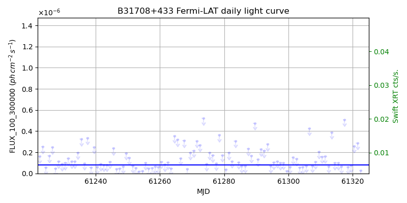
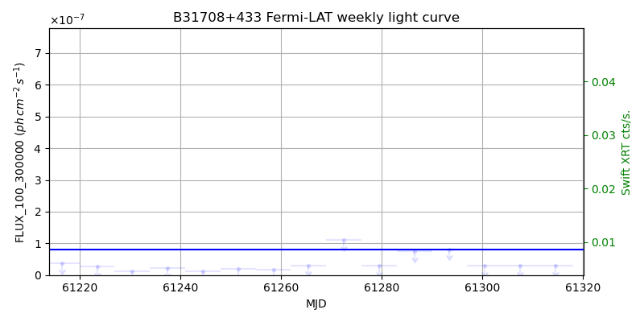
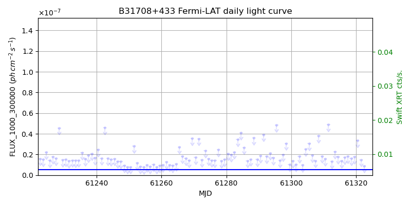
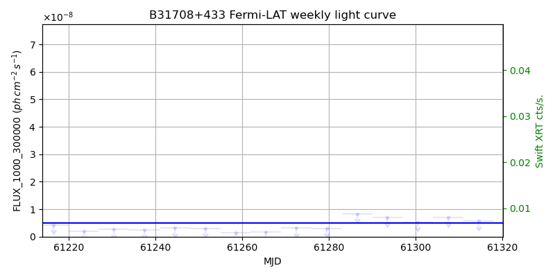

LAT Lightcurve site: https://fermi.gsfc.nasa.gov/ssc/data/access/lat/msl_lc/source/B3_1708p433
Swift site: https://www.swift.psu.edu/monitoring/source.php?source=B31708+433
NED: Query
Time of last update of this page: UT: 2026-10-10 15:23 (MJD: 61323.642)
| Property | Value |
|---|---|
| R.A. | 17:09:41.04 |
| Dec. | 43:18:43.2 |
| z | 1.027 |
| 3FGL SpectrumType | LogParabola |
| 3FGL PL Index | |
| 3FGL Flux_100_300000 | 8.04e-08 1 / (s cm2) |
| 3FGL Flux_1000_300000 | 5.09e-09 1 / (s cm2) |
| 3FGL Flux >200 GeV | 2.40e-12 1 / (s cm2) |
| 3FGL Extrap. Crab >200 GeV | 0.01 |
| 3FGL Flux After EBL Absorption >200GeV | 3.66e-14 1 / (s cm2) |
| 3FGL EBL Crab Fraction >200GeV | 0.00 |

| MJD | dMJD | Flux | dFlux | Frac3FGL | FracCrab>200GeV | EBLFracCrab>200GeV |
|---|---|---|---|---|---|---|
| 61318.50 | 0.50 | 6.05e-08 | 0.00e+00 | 0.00 | 0.00 | 0.00 |
| 61319.50 | 0.50 | 7.41e-08 | 0.00e+00 | 0.00 | 0.00 | 0.00 |
| 61320.50 | 0.50 | 2.59e-07 | 0.00e+00 | 0.00 | 0.00 | 0.00 |
| 61321.50 | 0.50 | 2.89e-07 | 0.00e+00 | 0.00 | 0.00 | 0.00 |
| 61322.50 | 0.50 | 2.58e-08 | 0.00e+00 | 0.00 | 0.00 | 0.00 |

| MJD | dMJD | Flux | dFlux | Frac3FGL | FracCrab>200GeV | EBLFracCrab>200GeV |
|---|---|---|---|---|---|---|
| 61286.50 | 3.50 | 7.56e-08 | 0.00e+00 | 0.00 | 0.00 | 0.00 |
| 61293.50 | 3.50 | 8.15e-08 | 0.00e+00 | 0.00 | 0.00 | 0.00 |
| 61300.50 | 3.50 | 2.96e-08 | 0.00e+00 | 0.00 | 0.00 | 0.00 |
| 61307.50 | 3.50 | 3.01e-08 | 0.00e+00 | 0.00 | 0.00 | 0.00 |
| 61314.50 | 3.50 | 2.90e-08 | 0.00e+00 | 0.00 | 0.00 | 0.00 |

| MJD | dMJD | Flux | dFlux | Frac3FGL | FracCrab>200GeV | EBLFracCrab>200GeV |
|---|---|---|---|---|---|---|
| 61318.50 | 0.50 | 1.63e-08 | 0.00e+00 | 0.00 | 0.00 | 0.00 |
| 61319.50 | 0.50 | 1.75e-08 | 0.00e+00 | 0.00 | 0.00 | 0.00 |
| 61320.50 | 0.50 | 3.36e-08 | 0.00e+00 | 0.00 | 0.00 | 0.00 |
| 61321.50 | 0.50 | 1.48e-08 | 0.00e+00 | 0.00 | 0.00 | 0.00 |
| 61322.50 | 0.50 | 8.89e-09 | 0.00e+00 | 0.00 | 0.00 | 0.00 |

| MJD | dMJD | Flux | dFlux | Frac3FGL | FracCrab>200GeV | EBLFracCrab>200GeV |
|---|---|---|---|---|---|---|
| 61286.50 | 3.50 | 8.34e-09 | 0.00e+00 | 0.00 | 0.00 | 0.00 |
| 61293.50 | 3.50 | 6.86e-09 | 0.00e+00 | 0.00 | 0.00 | 0.00 |
| 61300.50 | 3.50 | 5.32e-09 | 0.00e+00 | 0.00 | 0.00 | 0.00 |
| 61307.50 | 3.50 | 6.96e-09 | 0.00e+00 | 0.00 | 0.00 | 0.00 |
| 61314.50 | 3.50 | 5.69e-09 | 0.00e+00 | 0.00 | 0.00 | 0.00 |
--------------------------------------------------------- Using user-supplied coords: 17:09:41.04 43:18:43.2 2000 --------------------------------------------------------- FLWO UT night of: 2026-10-11 Local Sid. @ Midnight: 00:55 Sunset (-15.0) (local, UT): 19:04 02:04 Sunrise (-15.0) (local, UT): 05:18 12:18 Moonrise (local, UT): Moonset (local, UT): Moon phase: 0.01 --------------------------------------------------------- AzTime LSID UT Obj_el Obj_az Mn_el Mn_az Sep. --------------------------------------------------------- 19:04 19:58 02:04 55.1 301.6 -16.1 264.2 77.8 19:34 20:29 02:34 49.6 301.2 -22.3 267.8 77.7 20:04 20:59 03:04 44.1 301.6 -28.5 271.5 77.6 20:34 21:29 03:34 38.7 302.5 -34.7 275.4 77.5 21:04 21:59 04:04 33.3 303.9 -40.8 279.7 77.4 21:34 22:29 04:34 28.1 305.7 -46.8 284.6 77.3 22:04 22:59 05:04 23.0 307.9 -52.7 290.5 77.2 22:34 23:29 05:34 18.0 310.3 -58.4 297.7 77.0 23:04 23:59 06:04 13.3 313.1 -63.6 307.3 76.9 23:34 00:29 06:34 8.7 316.1 -68.1 320.3 76.8 00:04 00:59 07:04 4.5 319.6 -71.3 338.2 76.6 00:34 01:29 07:34 0.8 323.3 -72.6 0.4 76.5 01:04 01:59 08:04 -2.0 327.4 -71.5 22.7 76.4 01:34 02:30 08:34 -6.4 331.8 -68.3 40.8 76.3 02:04 03:00 09:04 -9.3 336.6 -63.9 54.1 76.2 02:34 03:30 09:34 -11.6 341.6 -58.7 63.8 76.1 03:04 04:00 10:04 -13.3 347.0 -53.1 71.2 75.9 03:34 04:30 10:34 -14.5 352.5 -47.3 77.2 75.9 04:04 05:00 11:04 -15.0 358.1 -41.4 82.2 75.8 04:34 05:30 11:34 -14.9 3.8 -35.3 86.6 75.7 05:04 06:00 12:04 -14.2 9.4 -29.2 90.6 75.6 05:18 06:14 12:18 -13.6 11.9 -26.5 92.4 75.6 --------------------------------------------------------- Dark hours >55 deg.: 0.00 srcstart (UT): 2026-10-11 02:04 srcend (UT): 2026-10-11 02:04